- Разместить на рабочей области два компьютера и коммутатор и соединить их

- Настроить адресацию на добавленных компьютерах
PC0:
IP - 192.168.2.6
Mask - 255.255.255.248
PC1:
IP - 192.168.2.5
Mask - 255.255.255.248
- Выполнить проверку работоспособности сети
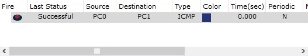
- Добавить на рабочее поле еще два компьютера и коммутатор и настроить адресацию из другой подсети
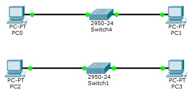
PC2:
IP - 172.16.3.254
Mask - 255.255.252.0
PC3:
IP - 172.16.3.253
Mask - 255.255.252.0
- Соединить коммутаторы между собой и проверить работоспособность сети
- В случае неработоспособности сети объяснить причины
В сети А и сети B разная адресация, поэтому необходимо использовать маршрутизатор - устройство, предназначенное для объединения сегментов сети.
- Добавить маршрутизатор на рабочее поле
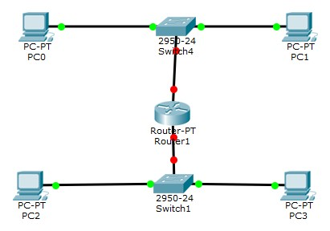
- Настроить интерфейсы маршрутизатора для существующих подсетей
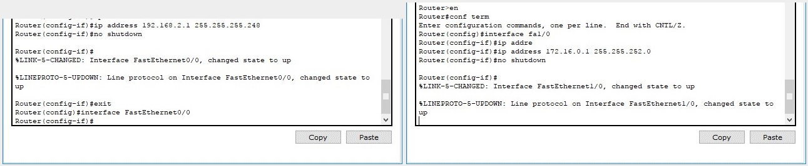
- Проверить работоспособность сети
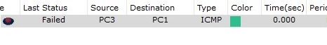
- В случае неработоспособности сети объяснить причины
На компьютерах одной сети отсутствует информация о маршрутах к другой сети, поэтому необходимо указать шлюз по умолчанию.
- Указать шлюз по умолчанию и отправить сообщение
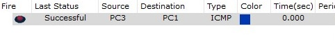
- Добавить на рабочее поле еще один маршрутизатор
- Подключить к нему коммутатор и компьютер
- Настроить сетевые настройки согласно таблице ниже
- Соединить между маршрутизаторы и настроить между ними сеть с префиксом /30
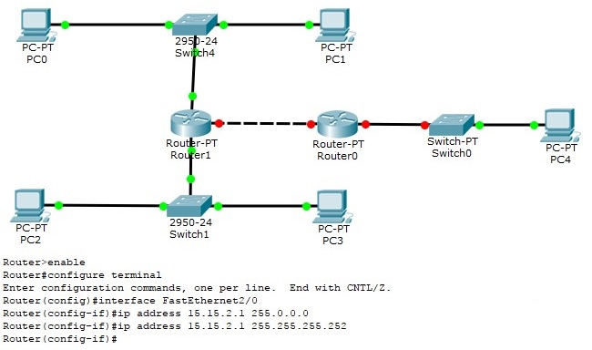
- Проверить работоспособность сети, отправив сообщение сети A в сеть С и из сети В в сеть С
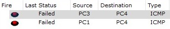
- В случае неработоспособности сети объяснить причины
На маршрутизаторах не настроена статическая маршрутизация.
- Настроить статическую маршрутизацию между сетями
От Router1 к Lan C:
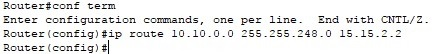
От Router0 к Lan A, от Router0 к Lan B:
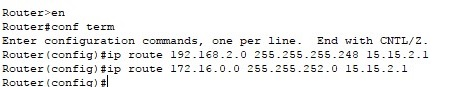
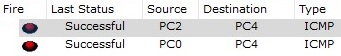
- Настроить на сетевых устройствах пароли для привилегированного режима
enable password mypassword
- Настроить пароли на сетевых устройствах пароли на подключение через консоль и telnet
Пароль на подключение через консоль
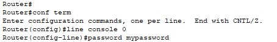
Пароль на подключение через telnet:
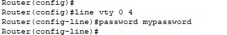
- Установить баннер на сетевое оборудование
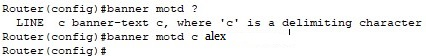
- Проверить работу удаленного подключения
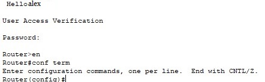